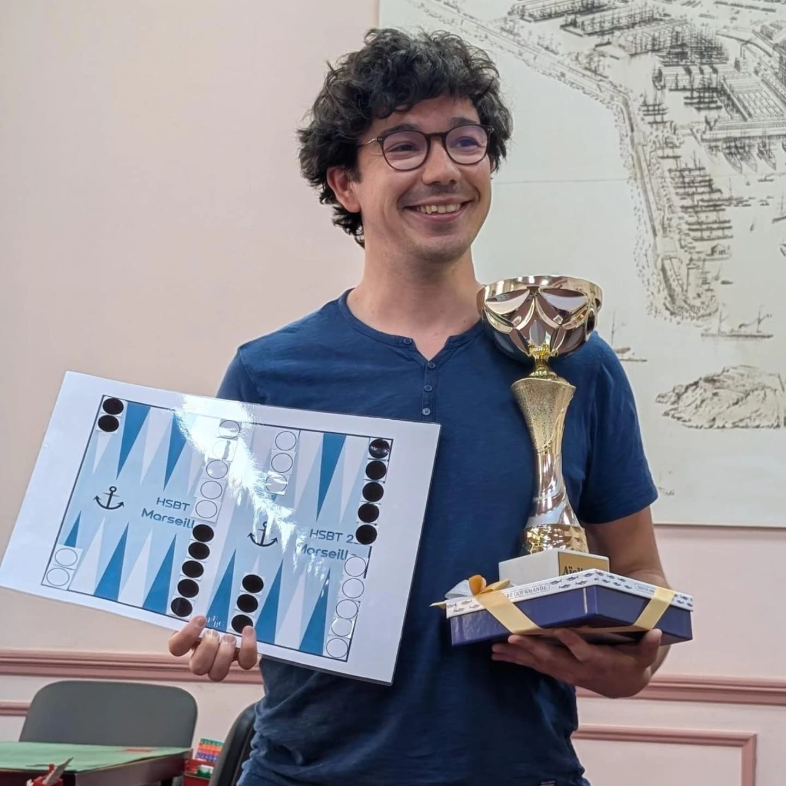

Mon Parcours My Journey
Mon parcours se situe à l'interface entre la physique de la matière molle et les systèmes biologiques. J'ai d'abord suivi une formation d'ingénieur pluridisciplinaire à l'ESPCI Paris, doublée d'un Master 2 ICFP (Physique des Liquides) à Sorbonne Université. C'est là que s'est forgée ma conviction que les concepts physiques (tensions superficielles, élasticité, hydrodynamique active) peuvent apporter un éclairage nouveau sur le fonctionnement et l'auto-organisation des tissus vivants.
J'ai ensuite effectué un doctorat en biophysique au laboratoire Matière et Systèmes Complexes (MSC) de l'Université Paris Diderot, sous la direction de Sylvie Hénon, portant sur la forme 3D et l'épaisseur des cellules épithéliales sur des substrats courbes. En 2018, j'ai eu l'opportunité d'être chercheur invité (Visiting Scholar) au sein du département de Bio-ingénierie de Stanford University (Prakash Lab), pour y étudier les défauts topologiques dans les colonies bactériennes actives.
Après ma thèse, j'ai choisi de confronter mes connaissances à la recherche appliquée industrielle en rejoignant Saint-Gobain Recherche Paris en tant qu'ingénieur de recherche. Pendant trois ans et demi, j'y ai développé des procédés physiques innovants, menant au dépôt de trois brevets internationaux. Fort de cette culture de rigueur et de robustesse expérimentale, je suis retourné à la recherche académique fondamentale en rejoignant le Laboratoire Jean Perrin (LJP) en 2024, travaillant sur la microrhéométrie de la matrice extracellulaire pendant l'embryogenèse.
My career lies at the interface between soft matter physics and biological systems. I first trained as a multidisciplinary engineer at ESPCI Paris, alongside a Master's degree in Physics of Liquids (ICFP) at Sorbonne Université. This is where I developed the conviction that physical concepts (surface tension, elasticity, active hydrodynamics) can bring new insights into the behavior and self-organization of living tissues.
I then completed a PhD in biophysics at the Matter and Complex Systems (MSC) laboratory of Université Paris Diderot, supervised by Sylvie Hénon, focusing on the 3D shape and thickness of epithelial cells on curved substrates. In 2018, I had the opportunity to join the Bio-engineering department of Stanford University (Prakash Lab) as a Visiting Scholar, studying topological defects in active bacterial colonies.
Following my PhD, I decided to apply my physics background to industrial research and joined Saint-Gobain Recherche Paris as an R&D engineer. For three and a half years, I developed innovative physical processes, leading to three international patents. Driven by this experience in experimental robustness and engineering rigor, I returned to fundamental academic research in 2024 by joining the Laboratoire Jean Perrin (LJP) as a postdoctoral researcher, working on the microrheometry of the extracellular matrix during embryogenesis.
Chronologie Timeline
Post-doctorant Postdoctoral Researcher
Sorbonne Université (Laboratoire Jean Perrin) — Paris
Recherche sur la microrhéométrie de la matrice extracellulaire pendant l'embryogenèse.
Research on microrheometry of the extracellular matrix during embryogenesis.
Ingénieur de recherche R&D R&D Research Engineer
Saint-Gobain Recherche Paris — Aubervilliers
Recherche appliquée en physique des procédés industriels (3 brevets déposés).
Applied research in industrial process physics (3 patents filed).
Chercheur Invité (Visiting Scholar) Visiting Scholar
Stanford University (Bio-engineering Dept.) — USA
Étude des défauts topologiques dans les colonies bactériennes actives (cristaux liquides) au sein du Prakash Lab.
Study of topological defects in active bacterial colonies (liquid crystals) in the Prakash Lab.
Doctorat & Post-doctorat de transition PhD & Transition Postdoc
Université Paris Diderot / Laboratoire MSC — Paris
Soutenance d'une thèse en biophysique sur la mécanique et la forme des cellules épithéliales.
PhD thesis in biophysics on the mechanics and shape of epithelial cells.
Diplôme d'Ingénieur & Master 2 ICFP Engineering Degree & M2 ICFP
ESPCI Paris / Sorbonne Université — Paris
Au-delà de la Physique : Le Backgammon Beyond Physics: Backgammon
En dehors du laboratoire, je suis un passionné de backgammon de compétition auquel je joue à un très haut niveau. Membre actif du circuit compétitif national et international, j'ai intégré la sélection nationale de l'Équipe de France et participerai aux Championnats du monde par équipe à Londres à la fin du mois d'août 2026.
Je détiens actuellement le titre de Master M2 décerné par le BMAB (Backgammon Masters Awarding Body).
Outside the lab, I am a passionate competitive backgammon player, playing at a very high level. As an active member of both national and international circuits, I was selected to represent the French National Team at the World Team Championships in London at the end of August 2026.
I currently hold the title of Master M2 awarded by the BMAB (Backgammon Masters Awarding Body).

Distinctions & Services Awards & Service
Distinctions Awards & Honors
- 🏆 Finaliste national des Olympiades de Physique (2011)
- 🌟 Nikon Small World in Motion (2015)
- 🥇 Lauréat CNRS "La preuve par l'image" (2019)
- 🎨 Lauréat "Beautiful Science" (Société Française de Physique, 2019)
- 🏆 National Finalist of the Physics Olympiads (2011)
- 🌟 Nikon Small World in Motion (2015)
- 🥇 Winner CNRS "La preuve par l'image" (2019)
- 🎨 Winner "Beautiful Science" (French Physical Society, 2019)
Service à la communauté Community Service
- Évaluation : Rédacteur/Reviewer pour la revue iScience (Cell Press).
- Organisation : Co-organisateur du symposium Dynamics of extra-cellular matrix (2024).
- Vulgarisation : Rédaction de la page Wikipédia francophone de référence pour les Cellules MDCK.
- Reviewing: Referee for the journal iScience (Cell Press).
- Organization: Co-organizer of the Dynamics of extra-cellular matrix symposium (2024).
- Outreach: Authored the reference French Wikipedia page for MDCK cells.